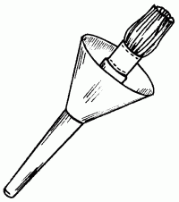

Оштукатуривание потолка.

Независимо от качества штукатурки штукатурный слой состоит из трех отдельно наносимых слоев: обрызга, грунта и накрывки.
Обрызг.
Первый слой штукатурного намета имеет толщину от 3 до 5 мм.
Раствор для ручного нанесения набрызга должен иметь среднюю консистенцию.
Грунт.
Второй слой штукатурного намета образует основную толщину штукатурки. Раствор тестообразный. Его наносят вручную слоем толщиной 70–80 мм при условии, что в его состав будет входить гипс, и слоем в 90–120 мм, если гипс в нем отсутствует.
Накрывка.
Третий слой штукатурного намета толщиной примерно 2 мм, консистенция его сметанообразная.
Каждый из последующих слоев должен наноситься только тогда, когда окончательно просохнет предыдущий. Известково-гипсовые растворы схватываются обычно через 7–15 минут, цементные – через 2–6 часов, а известковые следует считать схватившимися только тогда, когда они побелеют.
Перед оштукатуриванием поверхности ее необходимо обильно смочить водой. Как только вода впитается, сплошным слоем наносят обрызг. Грунт наносят или намазывают, тщательно его разравнивая, при необходимости в несколько слоев. После высыхания грунта настает очередь накрывки, которую затирают круговыми движениями.
Шпатлевание потолкаЕсли вы имеете дело с оштукатуренными потолками, лучше применять деревянные шпатели. Для деревянных поверхностей лучше подойдут металлические.
Приступая к шпатлеванию, шпатлевку накладывают в широкую плоскую емкость (например, в противень) и закрывают ее мокрой тряпкой или полиэтиленовой пленкой в целях предохранения от высыхания. Шпатель берут в правую руку, набирают на него немного шпатлевки и намазывают нетолстыми мазками на поверхность. Затем нажимают на лезвие шпателя левой рукой и разравнивают нанесенную шпатлевку вертикальными или горизонтальными движениями, держа шпатель под некоторым углом к поверхности. Разравнивают шпатлевку до очень тонкого слоя. В зависимости от качества поверхности шпатлюют 1–2 раза. Перед каждым наложением нового слоя предыдущий зачищают шлифовальной шкуркой и выравнивают. Повторная шпатлевка может быть нанесена прямо на ранее выполненную, или же ее предварительно огрунтовывают и просушивают. Шпатлевание по грунтовке значительно легче, так как шпатлевка ложится более тонким слоем. Если выполнять шпатлевание без грунтовки по высохшей шпатлевке, то она впитывает влагу из свежей порции и делает ее гуще.
Ошпатлеванную поверхность необходимо отшлифовать пемзой или шкуркой.
Шлифовальную шкурку складывают в несколько слоев и трут ею в разных направлениях. На зачищенной поверхности не должно быть шероховатостей, царапин и других дефектов.
Зачищают и шлифуют шпатлеванные поверхности в сухом и мокром виде. Сухую шлифовку применяют для клеевых красок, клеевые шпатлевки растирают при мокрой шлифовке.
Мокрую шлифовку применяют только по полумасляным, масляным или лаковым шпатлевкам. При мокрой шлифовке поверхность получается чище, чем при сухой.
Грунтовка потолкаОгрунтовывание поверхности производят 2 раза: перед шпатлеванием и перед началом окрашивания. Только в этом случае вы можете быть уверенными в том, что потолок получится красивым.
По составу грунтовки являются суспензиями, в состав которых входят красящий пигмент и пленкообразователь; после высыхания грунтовки превращаются в плотную непрозрачную структуру с определенными физико-химическими свойствами. Главной целью грунтования является усиление способности потолка связывать влагу.
Даже будучи равномерно оштукатуренным, потолок из-за разницы в толщине штукатурного слоя неодинаково связывает влагу в различных местах.
Отсутствие огрунтовочного слоя приведет к тому, что при нанесении краски потолок будет вбирать в себя влагу, что вызовет пересыхание краски и ухудшение ее способности к полноценной адгезии. Иными словами, краска не сможет долго удерживаться и начнет осыпаться.
Большинство грунтовочных составов созданы для краски определенного типа. Существуют также и универсальные грунтовки, которые подходят для всех без исключения красок.
Универсальная грунтовка на известковом тесте:
– тесто известковое жирное – 2,5 кг;
– поваренная соль – 100 г;
– вода – 10 л.
Известковое тесто размешивают в 5 л холодной воды. Соль или алюминиево-калиевые квасцы (200 г) размешивают отдельно в 2 л воды, после чего осторожно вливают тонкой струей в готовое известковое тесто. Полученный состав тщательно перемешивают и добавляют в него до 10 л воды.
Грунтовку следует обязательно процедить сквозь сито с ячейками 1 х 1 мм.
Мыльная грунтовка на извести-кипелке:
– тесто известковое жирное – от 1 до 2 кг;
– мыло хозяйственное – 200 г;
– олифа – 100 г.
Нарезанное стружками хозяйственное мыло растворяют в 3 л кипятка. Тонкой струйкой добавляют указанное количество олифы и перемешивают до получения однородного состава. Известь гасят в 5 л воды, постепенно вливая в нее мыльно-масляную жидкость, затем разбавляют полученный состав водой до объема 10 л и хорошо процеживают. Количество мыла и олифы при необходимости можно увеличить до 400 г.
Грунтовка на извести-кипелке идеально подходит для подготовки сильно загрязненных поверхностей.
Купоросная грунтовка для клеевой краски:
– медный купорос – 150 г;
– мыло хозяйственное – 250 г;
– сухой животный клей – 200 г;
– олифа – 30 г;
– просеянный мел – 3 кг.
Растворяют, помешивая, медный купорос в 3 л кипятка. Клей варят в 2 л воды, после чего отдельно растворяют в 2 л воды нарезанное мыло и вливают в клеевой состав. В тщательно перемешанную мыльно-клеевую жидкость вливают тонкой струей олифу и в полученную эмульсию аналогичным образом добавляют раствор медного купороса. Когда жидкость остынет, засыпают мел и доливают 10 л воды. Получившаяся в результате густая зеленовато-голубая жидкость и будет являться купоросной грунтовкой.
Такую грунтовку можно приготовить любой крепости, увеличивая или уменьшая количество воды и мела.
Без олифы грунтовку приготовить нельзя, так как может свернуться хозяйственное мыло. Использовать купоросную грунтовку следует в течение 2–3 суток. По истечении указанного времени состав начинает терять свои свойства.
Концентрированная студнеобразная грунтовка:
– купорос медный или алюминиевые квасцы – 7,5 кг;
– клей костный плиточный – 7,5 кг;
– мыло хозяйственное (40 %) – 7,5 кг;
– олифа натуральная уплотненная – 0,3 кг;
– вода – 10 л.
В 2–3 л горячей воды растворяют квасцы или купорос; отдельно растворяют заранее замоченный набухший клей. В 10 %-ный раствор клея при нагревании и перемешивании вводят нарезанное мелкими кусочками мыло и добавляют олифу.
В полученную эмульсию постепенно вливают готовый раствор квасцов или купороса, все тщательно перемешивая, и добавляют воду до объема 10 л.
Грунтование можно проводить двумя способами: ручным и механическим.
Ручной способ предусматривает использование макловицы или крупной маховой кисти, а для более тонкой работы применяют кисти поменьше. Если нужно приготовить под окраску гладкую поверхность, то в этом случае придется провести повторное грунтование.
Техника огрунтовывания: на поверхность сначала наносят маховыми кистями первый слой, после чего в горизонтальном направлении накладывают последующие, но независимо от назначения и типа грунтовки нанесение каждого из ее слоев следует производить только на полностью просушенный предыдущий. В процессе работы кисть не должна оставлять за собой излишков грунтовочного состава.
Окраска потолкаПотолок и окрасочный материал перед покраской должны быть соответствующим образом подготовлены (см. выше). Непосредственно окраску проводят в два приема: первый слой наносят маховой кистью или валиком, второй – специальным распылителем – пульверизатором. В быту для этой цели наиболее часто применяют пылесос типа «Ракета» или «Буран».
Шланг такого аппарата необходимо переставить на противоположную, напорную сторону.
В комплекте пылесоса есть распылительная насадка с крышкой. На банку с краской помещают всасывающее приспособление, после этого ее плотно закрывают крышкой и фиксируют зажимным устройством. Таким образом получается эффективное приспособление для нанесения высококачественного красочного покрытия.
Основной проблемой во время окраски потолка, разумеется, станет угроза перемазаться в краске с ног до головы. Чтобы этого с вами не случилось, наденьте старую одежду, а кисть оборудуйте нехитрой насадкой для сбора стекающей по ее ручке краски (рис. 8).

Рис. 8. Кисть для потолка.
Обычно потолки принято красить в белый цвет, реже – в светло-голубой, нежно-зеленый, персиковый или бледно-розовый.
Рассмотрим наиболее традиционные способы обновления потолков.
Побелка потолкаПри окрашивании потолков учитывают направление световых лучей, проникающих в окна. Если вы работаете кистью, то последний слой побелки должен наноситься обязательно по направлению к свету (к окну). А предыдущий – наоборот, поперек. Иначе, как бы тщательно вы ни выполняли работу, следы от кисти будут заметны на потолке. Кистью нужно работать так, чтобы ее взмахи были равномерными и побелка ложилась тонкими, ровными слоями.
Чтобы поверхность получилась ровной и чистой, необходимо не только грамотно работать кистью, но и правильно набирать кистью красящий состав. Его необходимо периодически взбалтывать кистью: это придает ему однородность, а на дне не образуется осадка. Можно также время от времени тщательно перемешивать его палочкой.
Еще один вариант нанесения побелки – при помощи краскораспылителя. Им может послужить обычный пылесос, снабженный специальной насадкой, которую можно купить в хозяйственном магазине.
При работе с краскораспылителем необходимо следить за однородностью и чистотой раствора: любая мелкая частичка, не растворившаяся в нем, может забить отверстие распылителя и в ряде случаев привести к его порче.
Для равномерной побелки поверхности раствор нужно наносить по двум взаимно перпендикулярным направлениям, то есть перекрещивая слои.
Скорость перемещения должна быть равномерной, нельзя задерживать струю побелки на одном месте дольше, чем на остальных.
Побелка известьюЭто наиболее простой и дешевый способ для побелки и дезинфекции стен и потолков.
Для побелки известью употребляется так называемое известковое молоко, которое получается из 1 части гашеной извести и 3 частей воды. Известковое молоко – сильное дезинфицирующее средство. Оно уничтожает бактерии и препятствует скоплению и размножению клопов в жилых помещениях.
Свежегашеную измельченную известь выкладывают в большую металлическую, эмалированную или деревянную посуду, заливают холодной водой и размешивают деревянной лопаткой до густоты сметаны. При гашении известь выделяет большое количество тепла и разбрызгивается, поэтому нужно быть осторожным.
Побелку потолков известковым составом необходимо производить по слегка влажной поверхности. Стойкость покраски увеличивается, если в подготовленный раствор добавить поваренную соль (25–50 г на 5 л побелки).
Побелка меломМеловой раствор приготавливают в той же пропорции, что и известковый.
На 3 части воды берут 1 часть мела или готовой меловой пасты, имеющейся в продаже. Использовать пасту гораздо удобнее, так как она избавит вас от долгого и кропотливого процесса измельчения и просеивания мела.
Мел или пасту кладут в посуду и постепенно доливают воду до нужного количества, тщательно перемешивая раствор.
Для приготовления меловых или клеевых окрасочных составов (побелок) их процеживают через слой марли.
Крупные части мела при этом остаются на марле, увеличивая расход материала; это необходимо учитывать при покупке мела.
Чтобы избежать желтоватого оттенка потолка, в побелку добавляют немного синьки или ультрамарина. Однако делать это следует с предельной осторожностью, иначе вы получите над головой незапланированный эффект «синего неба».
Для придания побелочному слою прочности можно ввести в его состав столярный клей из расчета 60–80 г на 3 л раствора.
Потолок также можно окрасить цветными красками, для чего в состав добавляют анилиновый краситель. При этом лучше предварительно поэкспериментировать с готовой побелкой на какой-нибудь поверхности (например, на стене, тоже предназначенной для ремонта).
Готовые красочные составыРоссийская промышленность выпускает также готовые к употреблению водоэмульсионные краски – такие, как, например, «Текс», «Баумакс», «Тикколор», расфасованные в полиэтиленовые канистры или металлические банки и представляющие собой густую пластичную массу, изготовленную на основе синтетического связующего (карбоксиметилцеллюлозы, дисперсии ПВА), пигментов и влагозащитных добавок.
Перед применением готовую побелку разбавляют равным объемом воды и перемешивают. Наносят ее щеткой, кистью или из краскораспылителя в 1–3 слоя, периодически просушивая в течение 2–3 часов.
Расход побелки – 100–120 г на 1 м2. Помимо того что готовая побелка не требует дополнительной подготовки перед использованием, она обладает повышенной прочностью по сравнению с обычной меловой.
Среди импортных красок рекомендуем отдать предпочтение продукции фирм «Tikkurila», «Beakers», «Marshal» – это водоэмульсионные краски.
Оклеивание потолков классическими и жидкими обоямиНа потолки можно наклеить обычные обои. Положительные стороны этого способа отделки налицо:
– выполнение ремонта в короткие сроки;
– скрытие дефектов подготовительного этапа (следы протечек, мелкие трещины и пр.);
– осуществление собственных дизайнерских проектов.
В зависимости от стойкости поверхности выпускают обои следующих видов:
– В-0, В-1 – влагостойкие, то есть устойчивые к влажному истиранию без применения моющих средств;
– В-2, В-3, В-4 – моющиеся, то есть устойчивые к применению всевозможных моющих средств;
– С – невлагостойкие.
По способу изготовления обои делят на грунтованные и негрунтованные. В первом случае рисунок нанесен на предварительно окрашенную (то есть огрунтованную) бумагу, что, конечно же, придает таким обоям большую прочность и декоративность. Грунтованные обои, в свою очередь, подразделяют на 2 группы:
– рельефные, имеющие многоцветный или одноцветный фон, рисунок на который нанесен густой краской;
– тисненые, изготавливаемые с помощью тиснения на плотной бумаге, покрытой специальным составом.
Грунтованные обои хороши еще и тем, что благодаря большой плотности могут скрывать, а кое-где даже и заглаживать некоторые дефекты потолков, например шероховатость поверхности. Кроме того, грунтованные обои очень декоративны, как мы это уже упомянули, и способны украсить собой практически любой интерьер.
Если к тому же грунтованные обои покрыты специальным верхним слоем, который закрепляет краску, то им и вовсе цены нет. Такие обои могут выдерживать влажную уборку и называются моющимися. В процессе оклеивания обоями некоторые из них, например стеклообои и виниловые, можно покрывать различными красящими составами, благодаря чему они также становятся моющимися.
По структуре декоративного покрытия выпускают обои следующих видов:
А – фоновые;
Б – с печатным рисунком без фона;
Г – с фоном и печатным рисунком;
Д – с печатным полутоновым рисунком без фона;
Е – с фоном и печатным полутоновым рисунком;
Ж – с рельефным фоном;
З – с фоном и рельефным рисунком;
И – фоновые с отделкой под шелк;
К – бесфоновые с печатным рисунком и отделкой под шелк;
М – фоновые, с печатным рисунком рельефа и с отделкой под шелк;
О – металлизированные с фоном и печатным рисунком;
П – велюровые, фоновые и без фона;
Р – фоновые, с печатным рисунком и пленочным покрытием.
В настоящее время российской промышленностью выпускается большое количество влагостойких обоев, перечислим только некоторые из них:
– пленка ПВХ (поливинилхлоридная). Это самоклеящаяся пленка, имеющая клеевой слой, защищенный подложкой. Пленка окрашена по всей длине, с гладкой либо рифленой поверхностью, иногда с рисунком, иногда без него;
– повинол – декоративный отделочный материал, состоящий из стеклоткани и хлопчатобумажной тканевой основы с поливинилхлоридным покрытием с лицевой стороны. Применяют для оклеивания в туалете, ванной комнате и кухне;
– изоплен – пленочный ПВХ-материал на бумажной основе;
– бумажные;
– виниловые;
– текстил-виниловые (иногда их называют тканевыми);
– стеклообои;
– жидкие обои;
– различные пленочные покрытия (линкруст, винистеновые и др.).
Бумажные обои – самые доступные в финансовом отношении покрытия. Тонкие виды бумажных обоев довольно быстро выходят из строя, в особенности если не подготовлена как следует поверхность потолков. Если она не загрунтована, с материалом работать гораздо труднее: он хуже сцепляется с поверхностью и в дальнейшем коробится под действием повышенной температуры и влажности. Хуже всего, когда обои изменили свой первоначальный цвет: скажем, при нежно-розовом местами приобрели грязный желтоватый оттенок.
В этом случае вам придется снова менять обои.
Для наклеивания бумажных обоев применяют клеи «Келид» или КМЦ. Не рекомендуется пользоваться для этих целей клеем ПВА: в дальнейшем, если года через два вы захотите сменить обои, у вас возникнут вполне определенные трудности с удалением старых.
Для оклеивания потолков обоями вам потребуются следующие инструменты:
– обойный нож;
– маховая кисть;
– валик для нанесения клея на потолок и на обои;
– валик для швов обоев;
– пластиковый шпатель для разглаживания обоев;
– ножницы;
– рулетка.
Эти инструменты необходимы для всех видов обоев, кроме жидких.
Перед оклеиванием обоями следует подготовить поверхность потолков. Для этого нужен шпатель, с помощью которого удаляют все неровности. Если ранее на потолке была известковая побелка, ее нужно предварительно смочить водой. Ранее, еще 10–15 лет назад, перед оклеиванием обоями поверхность потолка не загрунтовывали, а просто оклеивали газетами. Газетный слой считался достаточным препятствием на пути различных масел и жиров, которые в дальнейшем могли проступить на обоях. Вместо газет можно приобрести специальный рулонный материал (подложку) под обои из грубой бумаги. Наклеивают его поперечно, чтобы швы этого материала не совпадали с будущими обойными. После наклеивания материала ему нужно дать время высохнуть – не менее 24 часов. Вместо подложки можно также использовать грунтовку, о которой говорилось выше. Поверхности потолков, предназначенных для оклеивания пленками на тканевой основе, следует предварительно загрунтовать растворами мастик «Бустилат-М», «Гумилакс», а безосновные покрытия – мастиками КН-2, КН-3, «Бустилат», «Синтилакс». Разведенные составы нужно хранить в посуде с закрытой крышкой не более 5 дней.
Информацию о том, в каких пропорциях следует разводить клей, можно узнать из аннотации, которая прилагается к упаковке.
Немного о клее. Профессиональные мастера предпочитают использовать клей «Келид» для бумажных обоев. Мы специально об этом напоминаем, так как клей «Келид» выпускается в различных модификациях, например для виниловых обоев и для стеклообоев. Как и у большинства других высококачественных материалов, недостаток у него один – стоимость. А потому до сих пор самым популярным и доступным для рядовых граждан остается клей КМЦ.
Данный клей представляет собой рыхлую массу белого, иногда слегка желтоватого оттенка. Клейстер из клея КМЦ готовится следующим образом: в эмалированной емкости 96 массовых частей воды комнатной температуры смешивают с 4 частями клея, после чего оставляют его на 12 часов для набухания. Пока клей полностью не растворится, состав нужно не менее 3 раз перемешивать. Спустя указанный промежуток времени приготовленный клейстер необходимо процедить через мелкоячеистое сито.
Срок годности сухого клея КМЦ не ограничен.
Клеи могут быть жидкими, гелеообразными, в виде порошков и гранул, прутков и пленок. В жидких клеях клеящее вещество находится в виде дисперсии (водного раствора с равномерно распределенными в нем частичками клеящего вещества). Клеящее вещество в сухих порошкообразных клеях, гранулах, прутках и пленках находится в твердом состоянии.
Для того чтобы достичь необходимой вязкости, клеи разбавляют растворителями и разбавителями – водой, органическими растворителями и пр. Разбавители используют для приготовления дисперсий, а растворители – для растворов.
Для увеличения вязкости клея в состав вводят наполнители, причем некоторые из них (древесная мука, отходы мукомольного производства, альгинат натрия, каолин, фосфогипс и гипсовое вяжущее) обладают клеящей способностью.
Для стабилизации клеящего состава, связывания вредных выделений, пластификации и некоторых других целей в состав клея вводят различные добавки.
Вязкость клея (а именно ею обусловлен способ нанесения) находится в прямой зависимости от массовой доли сухого остатка, которая, в свою очередь, показывает, какое его количество в составе клея используется на формирование клеевого шва. Чем выше доля сухого остатка, тем меньше расход клея.
Крайне важно, чтобы в процессе работы вязкость клея не изменялась, поскольку от этого зависит равномерность расхода и нанесения на оклеиваемую поверхность.
Продолжительность испарения растворителей влияет на длительность открытой выдержки после нанесения клея, а также на изменение вязкости приготовленного клеевого состава в процессе работы. Мы уже говорили о том, что вязкость не должна изменяться больше допустимой величины.
Для приготовления водорастворимых клеев следует обращать внимание на то, что при добавлении воды не должен выпадать осадок.